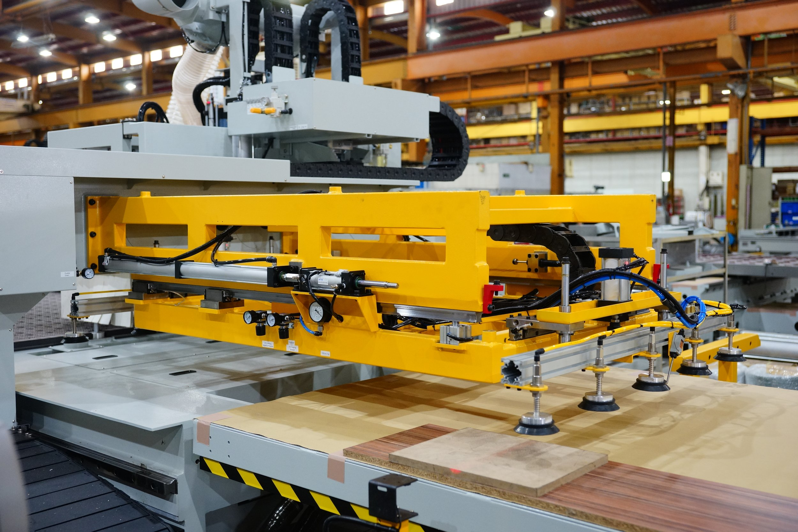

Your Local San Diego CNC Milling Experts
At Qualified Machine, we specialize in providing high-precision CNC milling services to San Diego's most demanding industries. Our state-of-the-art machine shop is equipped with advanced vertical and horizontal milling centers capable of producing complex parts with exceptional accuracy and repeatability.
Whether you need a single prototype or a full production run, our experienced team of programmers and machinists is dedicated to delivering superior quality parts that meet your exact specifications. We are experts in Design for Manufacturability (DFM), helping you optimize your designs for efficiency and cost-effectiveness.
Get a Milling Quote

Our CNC Milling Equipment
- Haas Mini Mill: 16" x 8" x 10" Travel
- Fadal VMC: 20" x 16" x 20" Travel
- Milltronics VMC: 30" x 16" x 20" Travel
- Three Kondia Manual Mills: 36" x 15.5" x 16.5" Travel
Milling Capabilities
- Axis Configuration: 3-Axis Milling
- Tolerances: Down to ±0.0002"
- Materials: Aluminum, Stainless Steel, Titanium, Inconel, Plastics, and more
- Surface Finishes: Standard, Bead Blast, Anodizing, Plating
- Quantities: Prototypes to High-Volume Production
Why Choose Us for CNC Milling in San Diego?
- ✓ Local Expertise: 45+ years serving San Diego businesses.
- ✓ Advanced Technology: High-speed CNC machining centers.
- ✓ Complex Geometries: Capable of machining highly complex parts.
- ✓ Rapid Turnaround: Rush services available for urgent projects.
- ✓ Experienced Team: Quality you can trust for critical applications.
- ✓ Free DFM Feedback: We help optimize your parts for production.
Discuss Your CNC Milling Project
Contact our San Diego team today to get a fast, competitive quote for your CNC milling needs.
Request Free Quote